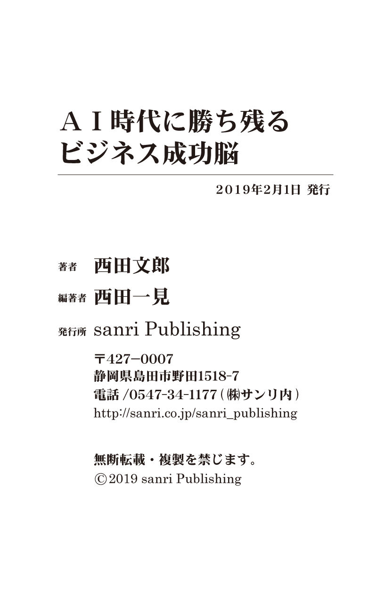

| ＡＩ時代に勝ち残るビジネス成功脳 | |
| 西田文郎 & 西田一見 | |
| (2019) | |
西田文郎 西田一見
皆様こんにちは、西田文郎です。
ご存知の方もいらっしゃると思いますが、私は40 年以上前から、数多くの方々に「脳の使い方」についてお話させて頂き、数多くの成功のお手伝いをして参りました。
本書では、これまでにお伝えしてきた内容だけではなく、講演会やセミナーなどでは、お話する事が出来ない裏話なども特別に書かせて頂いております。
人類大変革の時代
皆様は、「シンギュラリティ」をご存知でしょうか？
「シンギュラリティ」とは人工知能が人類の能力を上回ることなのですが、このシンギュラリティが、２０４５年に起こる可能性があるのです。
これまで人類は、地球上の生物の中で、最も優秀であった為、地球を支配できたのです。
ところが、シンギュラリティにより、人工知能が人類の能力を超えるという超知性の時代がやってくるのです。
なにが恐ろしいかと申し上げますと、人類は今までに自分たちを超える生物に出会った事がないのです。
つまり、これからの時代では、その人工知能と戦わなければならないのです。
今までの常識が全く通用しなくなるのです。
この新しい人工知能の時代に、我々人類は、脳の使い方次第で世界をガラッと変えることができる新時代に突入するのです。
一つのアイディアで市場を一気にかっさらえる時代になったのです！
そこで、これからの時代に非常に重要なのは、「スピード」と「発想力」なのです。
スピーディーに物事を行わなければ、時代に乗り遅れますし、発想力が無ければ、人工知能に勝てなくなってしまいます。
もちろん技術も重要なのですが、技術の時代からアイディアの時代に今、人類は突入しているのです。
そしてそのアイディアをどのように表現していくのか。
これが、これからの人工知能の時代において非常に重要になっていくのです。
実はまだ、人間の脳には無限の可能性があるのです。
本書では、それらの秘密を公開していきます。
株式会社サンリ会長・西田塾 塾長
西田文郎（にしだ ふみお）
人間のあらゆる仕事が人工知能（ＡＩ）にとって変わられると言われている この激動の時代。
あなたが自らの力を発揮し、ロボットに使われる側から 自らが使う側へとシフトしていく為にはどのような事が求められると思いますか？
あらゆる情報を瞬時に手に入れる事が可能になったこの時代において これまでの知識の量が価値をもたらしていた時代は終焉を迎える事となるでしょう。
つまり、これからの時代では人間だからこそ生み出せるアイデアなどの創造性がより求められていくのです。
では、その様なアイデアや思考法はどの様にして生み出していったらいいのでしょうか？
人間の思考を司っているもの＝「脳」です。
そして、この「脳」に蓄積された 数々の記憶データから、ロボットなどが全く予想もつかない様なアイデアなどが生まれるのです。
すなわち「脳」の仕組みを知り、創造性を生み出す思考法を手に入れる事が、これからの人工知能（ＡＩ）時代に求められるのです。
この本の著者、西田文郎はＳＢＴスーパーブレイントレーニングの創始者であり、ＳＢＴは人間の大脳の仕組みに基づいた能力開発のための画期的なトレーニングです。誰もが自らの可能性を伸ばす事ができます。
いままで、西田は上場企業や某有名企業をはじめ、数千人の経営者やビジネスパーソンを、ＳＢＴを用いて成功へと導いてまいりました。
この本は、その西田文郎がこれまでにお伝えしてきた内容を始め、急激に変化する世界で生き抜くための気付きやヒントをお伝えしております。
この本が皆様にとって新時代を勝ち抜くための道標となれば幸いです。
株式会社サンリ代表取締役 社長
西田一見（にしだ はつみ）
■西田文郎公式ページ
http://nishida-fumio.com
■西田会公式ページ
https://nishidakai.com/
■西田一見公式ページ
https://www.nishida-hatsumi.com/
■株式会社サンリ
https://www.sanri.co.jp/
■ＳＢＴ認定講座
http://sbt-trainers.com
■株式会社サンリ公式メ-ルマガジン
https://www.sanri.co.jp/mailmagazine/
これからの時代で成功する為には、必ずこの「感覚破壊」が重要になります。
そこで本章では、これからの時代で、とても重要な「感覚破壊」の戦略についての一例をお話させて頂きます。
それが、「破壊的イノベーション」 です。
破壊的イノベーションとは、既存製品に比べて性能が低いながら、低価格・単純・小型・使い勝手が良いなどの特徴を持ち、既存市場の顧客とは別の顧客から支持される技術革新が行われることを言います。
例えば、格安スマホが「破壊的イノベーション」にあたります。
これまで、携帯電話の料金は、通常１か月に約４０００から５０００円ほどの料金がかかりましたが、この格安スマホは、１か月約９８０円という信じられないほど安い価格で販売されています。
この格安スマホの出現により、大手携帯会社のこれまでのシェアがどんどん喰われてしまっているのです。
誰もが知る大手携帯会社も、本当は自分の首を絞める事になるのですが、「破壊的イノベーション」に対応しなければならず、低価格のスマホを販売し始めています。
これが、「破壊的イノベーション」の恐ろしさです。
これと同じ様に、「破壊的イノベーション」で速くて・安い価格破壊を起こして大ヒットしているのが、低価格の床屋さんです。
これは、どこのお店も超満員です。
実は、私も以前は髪の毛が殆ど無いのに、１回４０００円の床屋さんに行っていましたが、現在は、速くて・安い１０００円の床屋さんに行っています（笑）
髪の毛の無い私に４０００円で１時間かけて散髪をする以前の床屋さんは、『なんだったのだろう？』と不思議に思っています（笑）
これからの時代は、色々な業種でこの「破壊的イノベーション」が行なわれ、今までの常識を壊す「感覚破壊」が次々と行われていくと思います。
皆様も、仕事において素晴らしい「感覚破壊」を起こしてみましょう！
前章では「感覚破壊」の戦略の一例として、「破壊的イノベーション」についてご紹介させて頂きました。
これからの人工知能の時代では、今までの常識を壊す「感覚破壊」がとても重要であるという事をお伝えさせて頂きました。
この「感覚破壊」を起こす為には、脳を「メンタルヴィゴラス状態」にする必要があります。
「メンタルヴィゴラス状態」とは、思考とイメージ、感情の３つ が共にプラスの状態になっている事を意味します。
プラス思考、プラスイメージが大切だという事は、どなたでも理解していらっしゃると思います。
例えば、中小企業の経営者であれば、「年商５億の目標を立てて、それを目指そう」と目標を設定します。
しかし、計画通りに売上が伸びないとたちまちマイナス思考に支配され、「やっぱりダメだ」
という気持ちが出てきます。
肝心な時に助けにならないプラス思考では意味がありません。
なぜ肝心な時に助けにならない のか？
それは、脳をプラス思考にするには、「感情」という重要な要素が必要だからです。
感情が伴わないと、逆境を突き破るようなパワフルなプラス思考にはならないのです。
この「メンタルヴィゴラス状態」は、感情脳の大脳辺縁系に存在する、「扁桃核」という小さな組織から生まれてくるのです。
扁桃核は、快・不快や、人の好き・嫌いなどを判断しています。
過去のデータに基づいて、それが自分にとってプラスかマイナスかを瞬時に判断するのです。
脳がメンタルヴィゴラス状態になると、全身の活動性を高めるホルモンのドーパミンを分泌します。
従って創造力をはじめとした様々な脳の機能が高められ、潜在能力が引き出されるのです。
その為に、最高の自分が発揮でき、ラクラク成功する事になるのです。
実は、プラス感情になる為に、この扁桃核を変えるのは難しい事ではありません。
ある大学教授が行なった、「サルに好物を与えて扁桃核の反応を調べる」という実験があります。
その結果、サルは大好物のスイカを見ると、扁桃核のある一か所の細胞が反応するという事を発見しました。
そして、たっぷり塩をぬったスイカを食べさせたところ、サルはスイカを吐き出しました。
これを何度か繰り返すと、スイカを見ても扁桃核の細胞が反応しなくなったのです。
つまり、サルのスイカに対する扁桃核の記憶データが変化し、「スイカ＝好きだ」というプラス感情が出なくなったのです。
しばらく時間をおいて、甘いスイカを何度か食べさせると、再びプラス感情が条件づけられ、
扁桃核の細胞が反応を示し始めたのです。
この実験からわかる事は、好き・嫌いの判断をする脳である扁桃核は、条件付けで簡単に変える事が出来るという事です。
つまり、意識的に扁桃核のデータを変えれば、メンタルヴィゴラス状態を作る事が出来る のです。
これからの人工知能の時代において、この「脳のメンタルヴィゴラス状態」を意識して作る事が出来る人間だけが成功していきます。
皆様も、プラス感情になる為に、どんどん扁桃核に良い条件付けをし、自分の脳を成功脳へと導いていきましょう！
前章までは、脳の使い方一つで、これからの人工知能の時代で成功する事が出来るとお伝えしてきました。
しかし、人間としての幸せを追求しなければ「真の成功」とは言えないのです。
本章では、人間としての幸せを追求する為に、私たち人間が「生きる意味」についてお伝えしたいと思います。
人間が生きる意味とは？
あなたは、何の為に生きていますか？
あなたには、生きている意味があるのですか？
この質問に、皆様は何とお答えになるだろうか？
脳の機能を研究していると、「人間が生きるのには、実は意味がないのかも知れない」という所に必ず行きつくのです。
現在、地球上に確認されている生物は１５０万種以上います。
人間以外の生物に、「こう生きなければいけない」という意味を持った生物はいないのです。
実は、生物は、どう生きても、どうせ死を迎えるだけなのです！
多くの生物は、例外無く自分の命を守り、子孫を残す為だけに生きているのです。
しかし、そんな中で人間だけは、この脳を肥大化させた為に、「こうあるべきだ！」「こう生きるべきだ」と、脳が錯覚を生むのです。
同じ、錯覚なら身内を守り、愛する人を守り、大切な人を守ると言う「真の承認感」を脳が感じると「生き甲斐」が発生するのです。
錯覚でも脳にとって良い錯覚は、良い幸せを感じさせるホルモンを分泌させ、周りの人の脳にまで良い錯覚を起こすのです。
実は、人は脳が肥大化した為に、他の生物とは違い、「生きるには意味がある！」と、脳が錯覚しているのです。
人は、生きているだけで意味があり、それ以上の事は大した意味ではないのかも知れないのです。
人間の脳は意味を付けたがり、また、意味を付けて戦い（殺し）を行なって来たりしたのです。
皆さんもっと「脳の事を知りましょう！」
「人の為に何かを行う」＝「良い事」だと脳が思っており、大切な人を幸福にすると脳は、幸せホルモンを分泌するのです。
それならば、大切な人を幸福にし、幸せホルモンを分泌して生きた方が自分の人生幸せなのです。
株式会社サンリの近くの山に、縄文、弥生、古墳時代にかけての集落、竪穴式住居を復元した田ノ谷遺跡があります。
ここに住んでいた人は一万数千年前に亡くなっています。
この方々が「生きる意味は？」と問われたら何と答えたでしょうか？
私が講師をしている西田塾「天運の法則」では、三層になっている人間の脳の大変重要なお話をさせて頂いています。
また私の講演には、人間の「天運の法則」 の話が出てきます。
今、私の講演は、「天運の法則」 の話ができない会社や、人間の「天運」の大切さが分からない経営者の所の講演はお断りさせて頂いております。
それほど重要なお話をさせていただいています。
ぜひ私の講演を聞きにきてください。
皆様にもう一度伺います。
「生きる意味は？」
私の講演をお聞き頂いたらその全てが分かります。
西田文郎の経営塾 西田会「天運の法則」
https://nishidakai.com/tenun/
前章では「人間が生きる意味」についてお伝えさせて頂きました。
人間だけが、脳が肥大化した為に、「生きる意味」や「生き甲斐」というのが、あるのです。
本章では、長年、脳の機能を研究し、数多くの方々の成功のお手伝いをしてきました私から、人間として「成功」している方々の「目標設定の仕方」をお伝えしたいと思います。
「目標が無い」 というのが、マイナス人間の特徴です。
最初から「できない」と思っているから、本気で目標を設定しようとしないのです。
従来の目標設定は、１ヶ月、１年と、短いスパンに目的を置き、それをクリアしたら次の目的地を目指すというものでした。
しかし、短期的な目的しかない人は、それに失敗すると大きな挫折感を味わいます。
全てを失ったかのように錯覚するのです。
また、短期目標だけを見て努力した人が成功すると、そこで満足し、次の目標が見いだせない
「バーンアウト（燃え尽き状態）」に陥りやすくなるのです。
人の脳は怠け者です。
現状に満足し、「これでよし」と思えば、その瞬間に進歩が止まります。
登山でいえば、短期目標は１合目２合目。
頂上という長期目標をイメージ出来ない人は、そこでの成功・不成功に一喜一憂し、ストレスをためてしまいます。
私たちが本当に実現したいのは最後の「登頂」人生の最終目標であるはずです。
まず遠くに最高の目標を置き、そこから身近な目的を導き出すのが、成功する目標設定の仕方です。
人生の最終目標となれば、単なる出世やお金では済みません。
愛情や社会的な使命など、人間的な価値が要素として加わるに違いありません。
実はそれらが扁桃核に揺るぎないプラス感情をつくり、生きるエネルギーを支えてくれる武器になるのです。
人生の目標は決して下げてはいけません！
絶えず頂上をイメージし、右脳に成功のビジョンを植え付けながら、扁桃核に喜びを条件づけていくことが大切なのです。
長期目標は人生を引っ張り上げてくれる強力な磁力であり、牽引力です。
ここでは、
誰でも長期目標をイメージでき、
ラクラク成功してしまう目標設定方法、
「３―１方式」
を紹介致します。
【３年後の自分を徹底的にイメージする】
最大限に力を発揮したら、
３年後の自分はどうなっているかを思い描く。
可能な限り具体的に、３年後の目標設定をする。
【１年後を「基礎目標」として設定する】
３年後の自分を現実化するためには、
今年１年で何を達成する必要があるかを考える。
「将来のために今年がある」
「これは、大きな目標を達成するためのプロセスなのだ」
そう思えた時、人は心の底から頑張れるのです。
【２年後の目標を設定する】
１年後の基礎目標をクリアし、
さらに３年後の自分に近づくための、
２年後の目標設定をします。
こうして３年後→１年後→２年後の目標を明確にし、
イメージ力を強固にした上で、
はじめて長期目標をイメージします。
夢でしかなかった10
年後20
年後が、
鮮明に見えてくるはずです。
優秀な人間になるというのは、脳の快感物質のドーパミンを「ドバー」と出すことです。
この快感物質のドーパミンは、予測を上回った良い結果を出すと大量に分泌されるのです。
ドーパミンが分泌されることによって、脳は次も良い結果を出したいと思うのです。
優秀な人間は、このドーパミンを分泌させて、意欲的に仕事を行っているのです。
その脳にドーパミンを分泌させる最強の訓練方法があります。
それが「ナンパ」なのです。
ただし、すぐに手の届きそうな女性・チンケな男性ではいけません。
ワクワクする高嶺の花を落とさなければいけないのです。
異性を簡単に射止めてもドーパミンは出ません。
脳が感動しないからです（笑）
ワクワクする仕事をするには、ワクワクするナンパで訓練をすれば良いのです！
皆様も、脳に快感物質のドーパミンを分泌させる為に、ワクワクする出会い、ワクワクする仕事を行いましょう。
「ナンパ」も大切な訓練になるのです。
実は、成功者はみんな、ウソつきなのです。
こんな事を言うと、幼い頃から「ウソつきは泥棒の始まりだ」と教えられてきた皆様は不思議に思うかもしれませんが、
ウソつきは、「成功の始まり」なのです（笑）
もちろん、ウソがすべて良いというわけではありません。
ウソには「善意のウソ」と「悪意のウソ」の２種類があります。
「善意ウソ」は、相手も自分も幸せにします。
例えば、あなたの奥さんが「私、最近シワが増えてきた」と言っていたとします。
そんな時、あなたは正直に「お前本当にシワが増えたね」なんて言いますか？（笑）
きっと多くの方は、「大丈夫だよ！今でも全然若いよ！」とか、「可愛いよ」などと、実際にはそう思ってもないのに「善意のウソ」をつくはずです。
「善意のウソ」をつくことで脳が良い錯覚を起こし、『私はまだ大丈夫だ』と思ってしまうのです。
これはお世辞でも、真実でなくても良いのです。
自分の周りの人たちが幸せになるウソをつきましょう。
悪いウソとは、詐欺師のような悪意のある人を貶（おとし）めるウソです。
最近は、人を貶（おとし）めるそれらの「悪意のウソ」がネットなどでも出回っています。
皆様も、「悪意のウソ」には十分に気を付けて下さい。
前章では、脳の「善意のウソ」と「悪意のウソ」についてお伝え致しました。
成功者や幸せになる人は皆さん「善意のウソ」が上手なのです。
実はまだ、他にも成功者がついている大切なウソがあるのです。
本章では、それをご紹介します。
世の中には、
「成功するウソ」
をついている人と
「失敗するウソ」
をついている人がいます。
成功している人は、実はみんな、脳に「成功のウソ」をついているのです。
「成功のウソ」とは、まだ来ていない将来に対して、『自分なら出来る』『頑張れば出来る』『きっと出来る』などの、脳を肯定的に錯覚させるウソの事です。
反対に、「失敗のウソ」とは、『自分には出来ない』『どうせ無理』『そうは言っても...』などの、将来に対して否定的な錯覚を起こさせるウソの事です。
世の中で成功している人は、皆、共通して「成功のウソ」をバンバンついている人なのです。
「成功のウソ」をつく事で、人間の右脳はプラスイメージになり、そのプラスイメージによって感情はプラス感情になり、その後に思考が形成される為、プラス思考になるのです。
皆様も、成功者と同じ様に、まだ来ていない将来に対して、ワクワクする肯定的なウソを脳に語り掛けましょう！
日本の99 パーセントの中小企業の皆様へ！
今後、人口統計の予測通り、確実に労働人口は減少し、日本は超高齢社会に突入します。
人生長期化、医療費、社会保障費の高騰、国家レベルでの財政破綻の危機が、すぐそこまで迫ってきています。
これから、経営者やビジネスパーソンが考えなければいけない事があります。
多くの仕事が人工知能やロボットによって奪われていきます。
従来の脳の使い方では、人工知能やロボットには勝てません。
これからの、21 世紀の社会は、「組織の時代」から「個の時代」になっていきます。
これは「所有の時代」から「利用の時代」へと変化を遂げている事象の表れでもあります。
これからの経営者やビジネスパーソンは、
「変えるべきもの」
と
「変えてはいけないもの」
の、境界線をはっきりさせる事が重要です。
それが、企業にとっても、そこで働く人にとっても幸せに結び付きます。
その上で、経営サイドは、社員の為にできるだけ働き方の選択肢を増やす事を考える必要があります。
それは、世の中の変化が物凄いスピードで変わっていくからです。
前章では、これから来る人工知能とロボットの新時代では、これまでの考え方は全く通用しない時代になっていくとお伝え致しました。
従来の「組織の時代」から「個の時代」になっていくのです。
本章では、「組織の時代」から「個の時代」になる時の大事な脳の使い方についてお伝え致します。
いつの時代も世の中には、「支配者」と「奴隷」と「自由人」の三種類の人間がいました。
特に、高度経済成長期の「組織の時代」には、一部の『経営者』という支配者と、言い方はとても悪いですが、圧倒的多数の『社員』という奴隷で組織は成り立っていました。
その中に面白い事を考え、独自の意見を言う「自由人」がいると、発想力があり過ぎて、組織の統制が乱れるので困り者だったのです。
しかし、これからの「個の時代」は違います！
これから来る人工知能とロボティクスの新時代では、むしろ今までの考え方は全く通用しない時代になっていくのです。
それが、「組織の時代」から「個の時代」への大変革なのです。
これからは、自分の意見と思想を持った「自由人」だけしか生き残れなくなるのです。
あなたも、面白い事を考え、独自の意見を持つ「自由人」の脳に変わりましょう！
皆様は、『プラシーボ効果』というものをご存知でしょうか？
プラシーボ効果とは、薬理作用がないのに、効果があると思い込ませることで実際に作用がもたらされる現象のことです。
例えば、
医者が全く鎮痛効果の無い小麦粉を「これは痛みにすごく効くんだよ」と言って患者に飲ませると、実際に痛みが治まるといった事が一定の割合で起こります。
医者は患者に「ウソ」を言ったわけです。
１９５４年には、薬理学的に効果のない薬を鎮痛薬として与えた結果、30 パーセントの人に鎮痛効果があると認められたという報告がなされています。
しかし、最近、ある大学の研究で健康な１０８人に偽薬を投与したところ、そのうち18 人（16 ・７パーセント）に肝機能異常が出たそうです。
つまりプラシーボは良い結果ばかりではなく、使い方次第で悪い結果も起こすのです。
私たちがこの現象を上手に使う為には、やはり脳に「良いウソ」を言う事でしょう。
そもそもプラシーボの語源はラテン語で「私は喜ばせる」という意味の言葉に由来するそうです。
まさに「人を幸せにするウソ」ですね！
このプラシーボは、実際に医療の現場ではよく使われています。
「これであなたの病気は良くなります」と偽薬を出したら容態が安定したというケースは本当に起きているのです。
これは脳に、ポジティブな記憶や期待が体に良い影響を与えている証拠です。
私が、脳に「良いウソ」をつきましょう！とお伝えしている意味がおわかり頂けたでしょうか？
実はまだ、プラシーボ効果の使い道は他にもたくさんあるのです！
次はそちらについて触れていきます。
あなたの周りの方が幸せになる良いウソをついて下さいね！
前章で、プラシーボ効果について脳の観点からお伝えさせて頂きました。
例えば、男性が女性に対して
「君、きれいだね」
「かわいいね」
と言い続けていれば、プラシーボ効果が起こり、ある一定の割合で、女性は美しくなっていくものです。
その言葉がウソでもいい、相手は気分が良くなり、脳をポジティブにするホルモンが分泌されるのです。
これは、感情脳が「快」に振れるからです。
そのホルモンが美しさとどう関係するか、私はそっちの専門家ではないので明確には説明出来ませんが、女性にプラスの効果をもたらすことは間違いありません。
ウソでもいいのです！
男性は女性にぜひ
「かわいいね」
「ステキだよ」
と言い続けて下さい。
逆に女性は、男性が『見てくれはイマイチだし、頼りない人』だとしても「貴方はきっとデキる」「やればデキる人」とほめてあげれば、男性はその気になるものです。
この点は女性よりも男性の方がずっと単純なので、効き目も大きいと思います。
真実かどうか、客観的に見てどうかは、この際、全く関係ありません。
相手が幸せになるなら、じゃんじゃんプラシーボ効果が起こるウソをついてあげてください。
皆様は、『今日は、ばかみたいにアイディアが閃く』という日と、『考えても、考えても、何にもアイディアが閃（ひらめ）かない』という日はありませんか？
同じ人間なのに、この違いは不思議だと思いませんか？
人間の脳は、誰の脳でも、やる気のある時は『発展思考』になり、やる気がなくなると『停滞思考』になるのです。
能力が有るとか無いというのは実は、脳が発展思考になっているか停滞思考になっているかで大きく違うのです。
発展思考になっている脳の情報処理能力と停滞思考になっている脳の処理能力は著しく違うのです。
発展思考になっている脳は次々に問題解決を行い、停滞思考になると簡単な事に対しても問題解決が出来ないのです。
例えば、大好きな異性が出来ると男たちの脳は発展思考になり「どうにか彼女を落としたい」と思い、相手に注目させる事や相手を喜ばす事を一生懸命考えます。
所謂、プレイボーイというやつですね（笑）
反対に、どうでもいい異性に関しては、脳は面白い様に停滞思考になり、何にも考えないという事があります。
結婚して何年も経っているご夫婦に、よくこの様な停滞思考があります。
俗にいう「釣った魚にエサをやらない」というやつです（笑）
その為に「妻からの三行半（みくだりはん）」が起こり、今、奥様に捨てられるという男性が恐ろしいくらい増えています。
奥様に対しての停滞思考は命取りになるので充分に注意する必要があります。
スポーツ、ビジネス、受験、あらゆる分野で優秀と言われている人は、実は全て脳が、停滞思考ではなく、発展思考になっている人たちなのです。
皆様も発展思考でバリバリ働いてバリバリ儲けましょう！
前章では、脳の「発展思考と停滞思考」についてお伝えいたしました。
人間の脳は、やる気になると「発展思考」になり、アイディアが脳から無限に湧き出てきます。
そして面白い閃（ひらめ）きが起こり、脳の情報処理能力が著しく向上します。
実は、優秀な経営者とそうでない経営者の違いも、脳の発展思考と停滞思考の差だけなのです。
優秀な経営者の脳は、洞察力や問題発見能力が著しく優れています。
そしてあらゆる困難も、脳が乗り越えていってしまうのです。
なぜならば、発展思考の彼らの脳には明確な戦略、戦術ができていくからです。
それにより、戦い方の基本データがインプットされる為、同じ様な問題が起こっても、それに対する彼らの脳の処理能力が著しく早くなるからです。
また、その問題をより良い方向で解決する習慣が脳に形成されていくのです。
実は、優秀な経営者になる為の「絶対必要条件」というのはこの優れた脳の思考習慣を作る事なのです。
これが出来ていると「やらなければいけない事」が明確になり、問題解決能力も高まり、ますます発展思考になっていくのです。
反対に、成功できない脳になると停滞思考になり「ただ、やっていればいい事」だけをやる様になるのです。
経営者がビジネスの分野で成功しようと思うなら、この絶対必要条件の経営の定石（じょうせき）を勉強しなければ、強い経営者、優秀な経営者になる事はありません。
社会の変化や顧客のニーズを先取りして、適切な戦略、戦術を打っていかなければならないのです。
経営者の皆さん！
新しい時代に合った戦略戦術を学びましょう！
私は、昔から『成功者と一般の人の違いはなにか？』と聞かれます。
そこで私が答えるのは、「成功する人そうでない人の差は、失敗に対する脳の反応です。」とお答えします。
成功する人は、失敗しても失敗に気付いていないのです。
反対に成功しない人はすぐに失敗に気付くだけではなく、失敗した事を反省しているのです。
本章ではその様な成功者と一般の人の脳の使い方の違いについてお伝えしていきます。
一般の人は失敗すると、
「あの時こうしたのがダメだった」
「上司がこうしてくれたら、ああしてくれたら失敗しなかったのに」
「はじめから失敗すると思っていたよ」
などと、すぐに失敗を認める発言をします。
それどころか、ちょっとした苦しい事や辛い事があるといかにも大変だった様に言うものです。
しかし、成功者というのは一般の人とは違い失敗を失敗だと思っておりませんから、『失敗を全く気にしていないのです』
これは、なにも傲慢だからではありません。
彼らは失敗した事があっても
「ああ、あれね。大した事じゃないよ」
「あんなの失敗のうちに入らないよ」
「あの時ぜんぜん苦しいと思わなかったよ、むしろ楽しかったよ」
と口に出すのです。
多くの人は失敗すると、反省という負のエネルギーでクヨクヨし、不安要素をさらに強化してしまいます。
しかし、成功者たちの脳は、失敗すればするほど新たな発想を思い浮かべ、ウキウキ・ワクワクしているのです。
なぜなら、成功者たちの脳は、成功する事しか考えておらず、自分が成功するのを信じきっているからなのです。
皆様も、成功者と同じ様に失敗を失敗と認めず、失敗を口に出さず、失敗を楽しみ、脳をワクワクさせる人になりましょう！
人間は皆、努力をして生きています。
その努力にも色々な努力があります。
『貴方は、これまでどんな努力をしてきましたか？』
『また現在はどの様な努力をしていらっしゃいますか？』
私は、努力についてよくこう言います。
「過去の努力は自分の昔のアルバムであり、これからの努力は、新しい自分を作る未来のアルバムである。」
これからのアルバムは、どの様にでも作り上げられるのです。
私も小さい時から現在までの過去の努力を思い出すと懐かしく感じます。
『あの時は本当に頑張ったなぁ』とか、『苦しかったけど今思い出すと楽しかったなぁ』とか。
過去に行った自分の努力を思い出すと、過去の努力というのは、本当に楽しいアルバムのようです。
よく、学生時代スポーツをやっていた人たちが、居酒屋などでＯＢ会を行い、部活の苦しかった事を楽しそうに話しているのを見かけます。
これは、人間の脳が過去の苦しかった出来事や辛かった経験などをあたかもそれが良い経験だったかのように錯覚して楽しい記憶にしているからなのです。
そして、もう一つの大切な努力、それが「これからの努力」です。
これからの努力というのは、役者さんであれば、将来、舞台に立って素晴らしい演技をする自分をつくる稽古にあたります。
舞台に立ち、素晴らしい演技をする為には必ず、努力が必要になります。
しかし、多くの人は『過去の努力は楽しく、これからの努力は辛い』と錯覚しています。
そして、これからの努力から逃げてしまう人もいます。
これからの努力から逃げてしまった人たちの将来のアルバムには、楽しい思い出が何も無いという悲しい人生になってしまいます。
過去の努力も大切ですが、人間にとって、これからの努力はもっと大切です。
さぁ！
今からあなたの素晴らしい人生のアルバムを作る為に、「これからの努力」に力を入れていきしょう！
ビジネスでもスポーツでもその人の実力というのは、その人がそれまで努力してつけた「実行力」なのです。
努力し、実行して良い結果を出すと脳の当たり前基準が変わるのです。
仕事でも苦しい事を克服すると実力がついていくのです。
もし、仕事で苦しい事があれば、仕事での苦しみは、実力をつける為に神様があなたにくれたプレゼントだと思えば良いのです。
そして、その苦しみに本気でチャレンジし、努力していると不思議な事に必ず「必要な時に、必要な人と出会う」のです。
人生は本当に不思議です。
そこからとてつもない成功が生まれるのです。
それが「出会いの人間学」です。
『あなたは今、人生で必要な人に出会っていますか？』
もし、その様な素敵な出会いがあったなら、それはあなたの新しい実力がつく前触れなのです。
努力もせず、実行もせずに成功などありえません。
あなたの将来の素晴らしい人生アルバムを作る為に、苦しい事にもワクワクチャレンジし、
これからの人生を生きる為の「実行力」をつけて下さい。
努力なくして成功なし！
努力なくして実力なし！
努力なくして幸せなし！
努力なくして能力なし！
努力なくして人生なし！
あなたの最高の人生プログラムを作るのは、一歩を踏み出すその勇気なのです。
それがたった一回の人生を充実させる唯一の方法なのです。
皆さんは、辛抱にも３つの種類がある事はご存知でしょう。
これまで私は、何十年もの間、日本のトップ企業から中小・零細企業まで沢山の経営者の方々にお会いしてきました。
その中で、「経営者の勉強の質」の違いによって、企業のレベルが大きく変わってしまうという恐ろしい事実に気づきました。
それは、ご本人が正しいと思ってしている勉強が、実は自らをダメにしているという事が非常に多いという現実です。
私は以前、一代で東証１部上場企業を作り上げた知り合いの経営者から、「なぜ、中小企業の経営者は本質的な大切な勉強をせず、気分だけで動くんですかねー？」と言われた事がありました。
その時私は、脳の３種類の辛抱の質についてお話をさせて頂きました。
それが、
１・肉体的辛抱
２・精神的辛抱
３・知的辛抱
の３種類なのです。
私はこの３種類の辛抱の質を知らずに勉強をしているのは非常に危険だと感じております。
あなたの脳は今、どの辛抱をしているでしょうか？
私の経営塾「繁栄の法則」 )ではこの辛抱の質についてを徹底的にお伝えしております。
実は、人工知能とロボティクスのこれからの時代には、これが非常に大切なのです。
あなたは今、どの辛抱をしていらっしゃいますか？
又、どの辛抱が不足していらっしゃいますか？
それを、ぜひお考えください
最近、世の中が非常に激しい勢いで変化している為、ネットでは占いが流行っていますね。
将来の事というのは、その時が来なければ分かるものではありませんよね。
私も、まさか自分が脳梗塞になって倒れるなんて想像もしていませんでした。
将来の事など誰にもわからないのです。
その中で人間は、自分の将来に対し、錯覚をしながら生きているものです。
例えば、世界のホンダを作った本田宗一郎氏は町工場のおやじだった時代に従業員の前でミカン箱の上に立ち将来『世界のホンダになる！』と公言し周りをアッと驚かせたという有名な話があります。
当時、本田宗一郎氏はなぜこの様な事を言ってのけたのでしょうか？
それは、まだ来ていない将来に対して本田宗一郎氏の脳が『出来る』『必ずこうなる』という良い錯覚を起こしていたからなのです。
実は、本田宗一郎氏に限らず、世の中の成功者というのは全て将来に対して肯定的な錯覚を起こし続けた『アホな人』なのです。
しかし、一般の多くの人たちの脳は、まだ来ていない自分の将来に対して冷静な判断をし、『出来ない』『出来るはずがない』という否定的な錯覚を起こして生きているのです。
この２種類の錯覚によって、人間は幸せになったり不幸せになったりするのです。
これはなにも、ビジネスに限らず男女の恋愛や結婚などにおいても言える事です。
結婚というのも脳の錯覚によって起きている事なのです（笑）
、
その錯覚により幸せになっている夫婦と、不幸せになっている夫婦がいるのです。
皆様も、まだ来ていない将来に対して、肯定的な錯覚を起こす『アホ』になりましょう！
前章で、人間の脳はまだ来ていない将来に対し、肯定的な錯覚と否定的な錯覚の２種類の錯覚を起こしているとお伝え致しました。
そして成功者は皆、将来に対し肯定的な錯覚を起こす『アホな人』なのです。
この２種類の脳の錯覚によって人間は幸せになったり、不幸せになったりしています。
人間が、自分の人生が幸せかどうかを考える時、伴侶や家族との関係は極めて重要です。
そうした認識に立ったうえで、あえて言うのですが、「この人と結婚してもいいな」「赤い糸で結ばれていたんだな」と思うのも実は全て錯覚なのです。
赤い糸など１本もないのです。
これまで別々に暮らしてきた赤の他人と一緒になるのに、うまくいくか、いかないかなど最初からわかりっこない。
私がよく「結婚とはギャンブルみたいなものだ。アタリもあればハズレもある。」と言うのは、それが理由です。
結婚というのは、お互いがそれぞれの価値観で優先順位が一番の異性を選んでいるにすぎないのです。
私の場合、妻から見たら、『使いやすさ』で選ばれています（笑）
いくら外で偉そうなことを言っていても、うちでの私は、毎週火曜日と金曜日は「お父さん、今日はゴミの日よ」と妻に言われるゴミ出し係です。
同じゴミを捨てるという行動でも、「ゴミ捨て行ってきて！」と言われてから行動するのと、言われる前に行動するのでは、後者の方が断然、妻の機嫌が良くなります。
これが夫婦円満をもたらす為の錯覚の利用方法です！
やっている行動が同じにも関わらず、やってくれて『ありがたい』と思われるのは、言われる前に行動する方なのです。
この錯覚の法則を知っている為、私たちの夫婦生活は円満で幸せです。
皆様もこの『錯覚』を利用して幸せな人生にして下さい。
最近では、テレビやネットで以前にもまして『人工知能』についての話題が多くなってきております。
日々、技術革新が起こっており、この急激に変化する時代の流れに対応できない会社は、物凄い勢いで潰れていくと思います。
なぜ、１００年続く会社が少ないのか？
なぜ、30 年続く会社が少ないのか？
なぜ、30 年以内に９割以上の会社が潰れてしまうのか？
それは、企業に本当の「魂」が無いからです。
企業に本当の「魂」を吹き込むのに約30 年位掛かるのです。
例えば、トップが真に信頼出来るＮｏ・２を作ろうと思ったら、そう簡単に出来る訳ではないのです。
その信頼出来る「真のＮｏ・２」を３人作らなければ信念のある会社は出来ません。
会社を成功させるには？
目に見える会社の「経営計画書」と、目に見えない経営者の「自分経営計画書」の２通りの「経営計画書」が必要なのです。
良い組織、良い会社を作ろうとする経営者は、勝てる組織、勝てる会社を作れない。
強い組織、強い会社を作ろうとする経営者は、勝てる組織、勝てる会社を作る。
この本質がなぜなのか？
それは、経営は戦いだからです！
私の経営塾「繁栄の法則」 ではこれからの新時代に必要な組織の戦略・戦術についてお伝えしております。
是非、ご参加下さい。
組織が繁栄する絶対条件を学ぶ経営塾 西田会「繁栄の法則」
https://nishidakai.com/haneilp/
皆様いかがでしたか？
人工知能の到来により、今、世界は激動の時代を向かえようとしております。
人間の仕事がＡＩに取って変わられる時代において、これから先は圧倒的に優秀な"個"しか生きていけないと感じています。
というのも、元々人類の歩みを振り返ると、人間は全ての活動を"個"で行っていた時代がございました。
しかし、エジソンの産業革命以降、人間は一気に組織化していったのです。
つまり、"個"で全てをやらずに役割分担をしていく様になりました。
それが、これまでのビジネスの形であるネットワーク型のマネジメントです。
しかし、この人工知能の到来により、その組織化が"今"崩れます。
つまり、インターネット・人工知能の登場により個でビジネスができる時代になったのです。
誰もが個でビジネスが出来る時代において成功する為には、圧倒的に優秀な個でない限り生き残る事が出来ない時代になりました。
では、全く新しいこの個の時代における脳の使い方とは一体何なのでしょうか？
これまでのように、ネットワーク型で、ビジネスを行わなくても、個人でビジネスができるという素晴らしい時代がやってきたのです。
たった一つのアイディアで全てをかっさらえるのです。
新時代に必要なのは、無から有を生み出す思考力です。
これまで求められてきた『ロジカル・シンキング＝論理的思考』は、もう、人工知能の到来で全く通用しなくなります。
新時代の思考法は、ロジカル・シンキングではなく、『クリティカル・シンキング』なのです。
米アップル社の創業者であるスティーブ・ジョブズが言った「イノベーションというのは、１０００の可能性にＮＯと言う事だ。」
これこそが、新時代に求められる究極の思考法『クリティカル・シンキング』なのです。
この究極の思考法については、『強運の法則』という勉強会でお伝えいたします。
皆様、脳を知り、学び、迫りくる激動の時代を新時代の究極の思考法を手に入れて下さい。
皆様、「脳」の仕組みを知り、学び、創造性を生み出す思考法を手に入れ、これからの人工知能（ＡＩ）時代を勝ち抜いてください。
株式会社サンリ代表取締役 社長
西田一見（にしだ はつみ）
西田文郎（にしだ・ふみお）
株式会社サンリ会長
西田会会長
西田塾塾長
ＪＡＤＡ協会会長
１９４９年生まれ。日本におけるイメージトレーニング研究・指導のパイオニア。１９７０年代から科学的なイメージトレーニングの研究を始め、大脳生理学と心理学を利用して脳の機能にアプローチする画期的なノウハウ「スーパーブレイントレーニングシステム(Ｓ・Ｂ・Ｔ)」を構築。日本の経営者、ビジネスパーソンを数多く育成している。経営者の勉強会として開催している『西田塾』には全国各地の経営者が門下生として参加、毎回キャンセル待ちが出るほど入塾希望者が殺到している。スポーツの分野でも科学的なメンタルトレーニング指導を行い、多くのトップアスリートを成功に導いている。
著書に『Ｎｏ．１理論』『面白いほど成功するツキの大原則』『Ｎｏ.１メンタルトレーニング』『Ｎｏ．１営業力』『Ｎｏ.２理論』『天運の法則』『はやく六十歳になりなさい』『[新装版]10
人の法則』『大きく稼ぐ経営者になる脳のアップグレード術』（現代書林）、『強運の法則』『人望の法則』（日本経営合理化協会）、『ツキの最強法則』（ダイヤモンド社）、『錯覚の法則』（大和書房）など多数ある。
西田文郎公式ウェブサイト
https://nishida-fumio.com/
西田会ウェブサイト
https://nishidakai.com/
西田文郎フェイスブック
https://www.facebook.com/nishidafumio.sanri/
西田一見（にしだ・はつみ）
１９７３年生まれ
株式会社サンリ代表取締役社長
ＪＡＤＡ（日本能力開発分析）協会認定 グランドマスターコーチ
メンタルトレーナー＆
目標達成ナビゲーター
サンリ能力開発研究所にて大脳生理学と心理学に基づく科学的なメンタルトレーニングの研究をはじめ、脳の機能にアプローチする画期的な潜在能力開発プログラム「ＳＢＴ（スーパーブレイントレーニング）理論」を指導。
さまざまな心理分析データから夢・目標達成をサポートする「目標達成ナビゲーター」として、講演・講習などですでに数百万人以上の指導実績を持つ。
ビジネスパーソンへの個人指導をはじめ、Ｊリーガー、プロ野球選手、プロゴルファー等、トップアスリートのメンタルトレーニングにもあたっている。
小中高生を対象とした目標達成のための受験指導でも高い評価を受けている。
近年では上場企業をはじめとした企業の社員教育にも力を注ぎ、「社員のやる気が根本から変わり、組織が急激に伸びていく」と講演依頼も多数。
現在、ＳＢＴを資格制度として確立し、指導したコーチが、五輪金メダリスト輩出など、様々な活躍を遂げている。
経営者、経営幹部のための変化成長を実感できるビジネススクール「プレミアムスクールの講師」として多くの成功者を輩出している。
「笑っていいとも」（フジテレビ系列）
「たけしのニッポンのミカタ」（テレビ東京系列）のテレビでも取り上げられ話題となる。
「anan（マガジンハウス）」
「BigTomorrow（青春出版社）」
「プレジデントファミリー（プレジデント社）」
「GLAMOROUSE（講談社）」
「美的（小学館）」
「FYTTE（学研）」などの雑誌への寄稿も多数。
西田一見公式ウェブサイト
https://www.nishida-hatsumi.com/
西田一見フェイスブック
https://www.facebook.com/nishidahatsumi
株式会社サンリ
https://www.sanri.co.jp/
本品の全部あるいは一部を無断で複製・転載・配信・送信したり、ホームページ上に転載することを禁止します。
本作品の内容を無断で改変、改ざん等を行うことも禁止します。
また、有償・無償にかかわらず本作品を第三者に譲渡することはできません。
